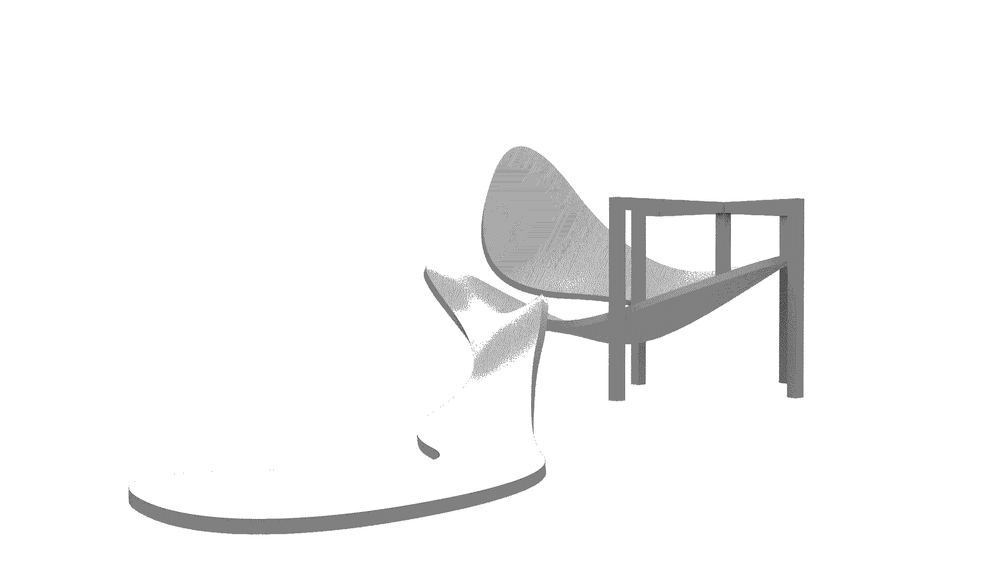
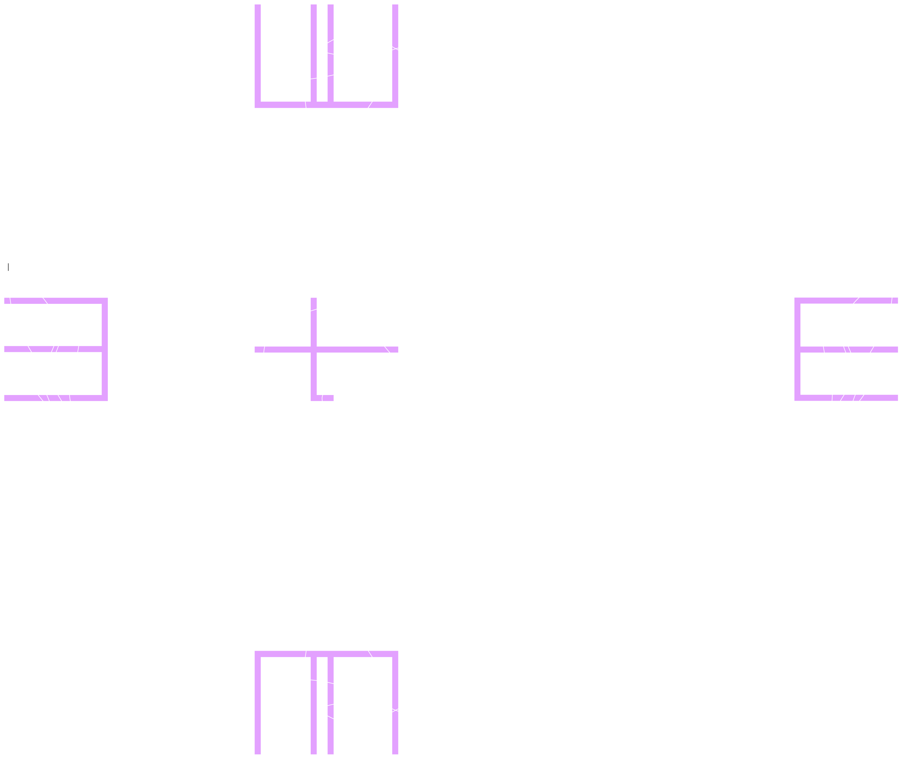
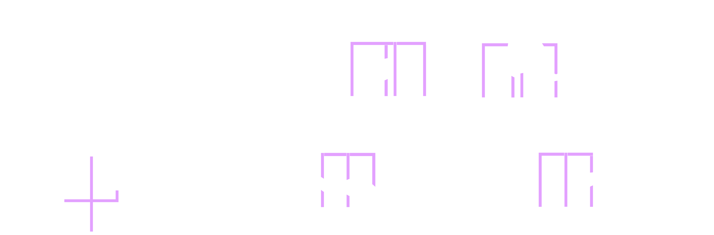
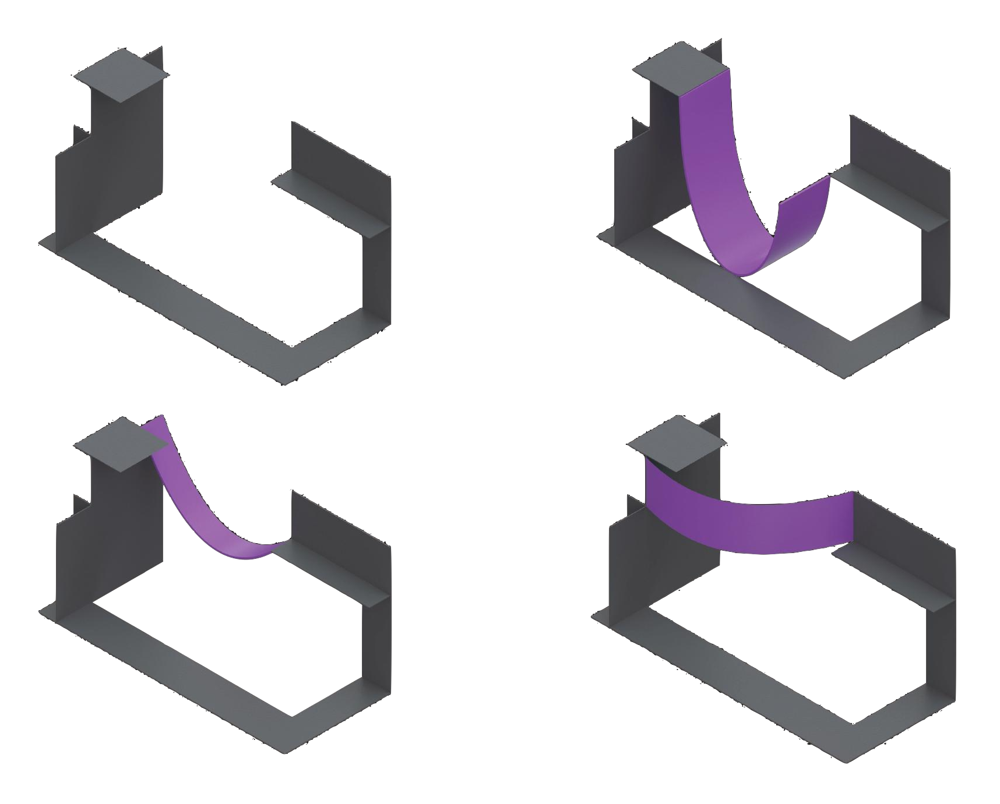

Incompleteness and Myth
In 1912, amid a creative, polemical period, Umberto Boccioni published “The Technical Manifesto of Futurist Sculpture.” In it, he calls for his contemporaries to join him in turning “everything upside down,” in proclaiming “the absolute and complete abolition of finite lines and the contained statue,” in splitting “open our figures” and placing “the environment inside them."1 The fervour with which he presented this imperative is striking. It manifests itself in eleven conclusions, geared at collapsing the dichotomy of reality and sculpture that he delineates.2 It manifests itself, too, in a body of sculptural work, through which his ideas can be traced.
Cast into bronze a year later, one such work, The Development of a Bottle in Space, can be read as a reproduction of these ideas. As Krauss notes, the sculpture is “a still-life arrangement of a bottle, dish, and glass."3 However, at first glance, it is unintelligible as such. The sculpture consists of “a series of bottle-shape profiles” that, together, read as a messy fusion of objects — a series of Chinese boxes, to borrow from Krauss — on top of which a hardy bronze cloth has been draped, generating the likeness of something plastic, something organic, something in “relative motion."4 The viewer is engaged, urged to move around, to follow the object’s organic, motioning profile and reconcile incompleteness as it unfolds in time and space. However, from one privileged view, the front view, the viewer — presented with a slither of clarity, with the semblance of the complete — is asked to pause. As if Boccioni had decided to cut through a section of the bronze draping to allow the viewer to “[achieve] reality,"5 the front elevation, breaking from the other views, reveals that lodged within the sculpture’s hardy, bronze mysteriousness is the profile of a bottle, a “sign,” something whose qualities are familiar, known, intelligible.6
One might interpret this decision as humorous, as a slow teasing of the viewer in motion, submerging them in the wet of the incomplete before they stumble on any sign of completeness. Perhaps this humour figures into Boccioni’s intention here. Maybe not. Beyond this musing, however, it is clear that the work draws directly from his system of thought. The sculpture turns everything upside down — if we take Boccioni’s “everything” to indeed be everything. It makes the interior bottle live by “showing [its] extensions” — the curvilinear, draping exterior that emerges from its profile — “as sensitive, systematic and plastic."7 Likewise, in its bridging of absolute and relative motions — the sculpture’s fixed essence and the viewer’s unfixed sense of it, respectively — it activates the viewer, encouraging them to collapse the dichotomy of reality and sculpture themselves.8 To be sure, the interior bottle is only complete for Boccioni when “a poverty of brute perception” is overcome, when the sculpture is more fully known to its viewer.9 Boccioni, here, might be read as having been interested in creating partial traces of the complete, putting the viewer into relative motion, moving them through incompleteness to a reconciliatory moment, a moment in which the boundary between reality and sculpture is collapsed and the object’s essence — its truth as an “element in the plastic rhythm of the whole” — is incessantly clear.10
It follows that completeness for Boccioni is, at least to some extent, viewer-dependent. To Boccioni, “A leg, an arm, or an object has no importance except as an element in the plastic rhythm of the whole."11 And indeed, as the sculpture suggests, it takes the participation of the viewer to perceive both the rhythm of the whole and the work’s embeddedness in that whole. From Boccioni, then, we arrive at the issue of completeness, namely the question of the extent to which viewer participation is a necessary condition for completeness.
Kobro, in dialogue with Boccioni, reflects on this question. The theory of unism that runs through Kobro’s sculptural work is a complex set of ideas with various dimensions, many of which context-dependent, some of which politically charged. The theory, as it relates to sculpture, takes form in her and Strzeminski’s early writing. In the realm of sculpture, unism refers loosely to an interest in the “union of the sculpture with space, the saturation of space by the sculpture” and “the fusion of the sculpture in space."12 These dimensions of unism — this interest in organicity, in collapsing the boundary between space and sculpture — recall, in some ways, Boccioni and his position on completeness and participation.
Created in 1928, Kobro's Spatial Composition 4 might be read as an attempt to collapse the boundary between space and sculpture. The mechanism for a collapse that it seems to suggest reflects, in one reading, Kobro’s divergent position. Bois, commenting on her work broadly, notes that she created sculptures “in which no elevation [could] be inferred from any other."13 That analysis appears to hold for this work. It consists of thin, rectilinear volumes, purposefully placed so that information from any one elevation is always incomplete. From two of the elevations, for example, the viewer encounters a curvilinear, extruded object, resembling a J curve, that is invisible or otherwise obstructed in the other elevations. The totality of the sculptural object cannot be inferred from any one view for Kobro. The object can only be completely resolved by reconciling views over time, by a purposeful rhythm of looking, rendering imaginaries of the whole implied by a single perspective, by a speck of time, incomplete. On one hand, this perspectival dynamism forces the viewer to imagine the object organically as continuous with — and not separate from — real-time and space. On the other, it invites the viewer to engage in mythmaking, to embrace the incompleteness of the sculpture and intervene with imaginaries of their own design.
Indeed, Kobro, with Spatial Composition 4, creates a structured space, defined by rectilinear planes, whose incompleteness serves as a framework for the viewer to follow her lead, to develop myths, to devise unexpected, intermediary curvilinear objects of their imagining. Kobro invites the viewer to punctuate completeness for themselves. The ilk of the J curve — fortunately, here, without the pretence of depreciation — is not a rigid prescription but rather an impelling suggestion. In the spirit of unism, Kobro’s invitation to the viewer to complete the object, to fuse viewer space and sculptural space, suggests that the sculpture of unism is incomplete without an unfixed, viewer-driven, sculpture-enabled dialogue of showing, imagining, and mythmaking. The viewer, here, is central: they complete the sculpture as it becomes more fully known to them.
The viewer, as has been suggested, is central to completeness for both Kobro and Boccioni. For Boccioni, the viewer is activated by asking them to transcend questions of interiority and exteriority, to consider sculptural objects as elements of a plastic reality in motion. The telos of sculpture, for Boccioni, is this activation; it is incomplete without it. For Kobro, sculptures define spaces whose incompleteness, revealing itself in real-time and space, invites viewers to interpret, to imagine, to make myths from that which is opaque or unknown — to complete the sculpture for themselves as it unravels for them. Completeness, for Kobro, is punctuated by the viewer, by the settledness of their imaginaries of the sculpture. The sculpture is merely the structure in which those imaginaries take root. The viewer’s capacity to participate, to intervene, to make the incomplete complete is validated by Boccioni and, more formally, Kobro.
This curiosity about the relationship between completeness and participation, developed in both Boccioni and Kobro, will be moved through a peculiar moment in architecture’s postwar avant-garde, through Peter Cook’s Plug-in City and Cedric Price’s Fun Palace. If the argument that Kobro can be read as enabling the viewer to, from perspectival incompleteness, intervene with imaginaries and myth — to participate and ultimately complete — is well-taken, then perhaps Price can be read as translating that imperative to architecture. For Price, the viewer’s intervention should not end at the imaginary, at the mythical. It should affect form and program. Price’s Fun Palace can be read, programmatically, as an “interactive and improvisational architecture."14 Its form and program resisted, in a fashion similar to Kobro’s resistance to baroqueness, “normative architectural practice."15 In place of it, the building’s form and program were to be determined in an ad hoc fashion, to remain “unknowable in advance."16 In Price’s imagination, the mass of dynamic, partial individual views was given agency over the view of the architect; the central-planning latter, minimized, was resigned to creating the structure, reminiscent of an earlier interpretation of Kobro, in which the partial views of individual are given license to imagine and perform. Price’s drawings, representing the Fun Palace as “the giant scaffold of some incomplete building,” point to this hierarchy.17 Indeed, despite its aesthetic of incompleteness, it was, for its users, imagined as complete, performing to their incomplete views, giving form to the sum of their momentary myths. For Price, the building was no longer static, separate from the social world in which it existed, but completed by it. Price can be read as taking the idea, present in both Boccioni and Kobro, that an object’s completeness unfolds in real-time, in dialogue with individuals who could only see the whole incompletely, further. Completeness was, here, not merely imagined. It was material, architectural, a product of a continous dialogue with social life's partiality and messiness.
Created during the same period, Peter Cook’s Plug-in City similarly takes a position on the issue of completeness. It, likewise never built, imagines a city characterized by “the principle of collectivity,” by “interchangeable apartment units,” and by “rapid transport links."18 Its drawings — imbued with a sense of incompleteness, much like Cedric Price’s drawings of the Fun Palace — regarded the city as an indeterminate network of parts, as “an event that could only be realized by the active involvement of its inhabitants."19 Urban reality was, it follows, modelled as plastic, as a mass of partial, incomplete views moving semi-stochastically, a condition to which the Plug-in City, forever adaptable, could reflexively and completely respond. The Plug-in City was, in this way, presented as a complete “long-term structure” that could support incomplete, “short-term components,” that could respond to the evolving totality of the information-poor views of its live individuals.20 In Cook’s scheme, we see traces of both Kobro and Price. Much like Kobro, he appears to have been interested in creating a complete structure that individuals could jam with imaginaries, capturing a concern for organicity that is reminiscent of unism. Like Price, Cook also adds a layer of materiality to these imaginaries, suggesting that the city, in form and program, should collapse the dichotomy of static urbanity and social reality, of urban figure and social space, adapting the material experience of the former — not merely the imagination of it — in response to the mass of the latter’s individual, partial perspectives, to the space of life around it. Indeed, the Plug-in City was imagined such that it could be completed by the collectivity of evolving, partial views held by its individuals. It was neither completed for a single privileged moment nor imagined as complete by one privileged view.
Threading through all of these thinkers is a tension between the complete and the incomplete. There are, of course, nuances that the reading that I have coarsely detailed brushes over. What I hope to have surfaced, however, is that there is a way, possibly, of interpreting them as similarly defining completeness in terms of possibility, that is, in terms of that which they, in their sculpting, in their architecting, have not defined or, rather, have defined as being exterior. Boccioni asks us to see the bottle as engulfed in a wider, transcendent world to which the emerging, curvilinear exterior gestures. Kobro loosely defines space and sketches intermediary, curvilinear possibilities of her imagining, inviting the viewer to do the same, to break the boundary between the external space of which they are a part and that of the sculpture — to imagine possibilities for themselves and complete the work. Price and Cook similarly imagined structures that were, by design, completely incomplete, that were to perform completely for the indeterminate views of the imagining individuals co-inhabiting them. For them, the building and the city, always incomplete, should adapt, in both form and program, to the collective space of live, partial possibilities, a space that Kobro draws our attention to.
In my work, I hope to have, hopefully without sounding too whimsical or conceited, touched on my position on this issue. In plan and from all four elevations, there is a tension between a rectilinear structure, designed on a regular grid, and a curvilinear surface. The uncertain relationship between the two, in a manner reminiscent of my reading of Kobro, was meant to engage possibility, the mythmaking faculties of the viewer. In the design, the increased liveliness, tending upwards, of the irregular curvilinear line of thought, thronged by twists and turns, by a sense of directional incompleteness, is made to seem possible only by the regularity of the enveloping tensile structure. In entertaining that possibility, the viewer, so it is hoped, would be moved to consider not only where that curve might be tending but also the potential for a new curve, of their imagining, being supported too.
Feel free to [email] me for a fully referenced version.